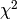

The Simplex algorithm of Nelder & Mead is a very robust but inefficient (slow) optimisation algorithm.
It only uses function evaluations but no gradients or inferred gradients. The score function is minimised geometrically be stepping in different directions, trying different stepsizes.
The function to be minimised is directly provided, e.g., as a . Hence, Simplex is much more general than leastsq or curve_fit.
Here is a code example:
from scipy.optimize import fmin as simplex
def func(params, X, Y):
# extract current values of fit parameters from input array
a = params[0]
b = params[1]
c = params[2]
# compute chi-square
chi2 = 0.0
for n in range(len(X)):
x = X[n]
# The function y(x) is a polynomial in this example.
y = a + b*x + c*x*x
chi2 = chi2 + (Y[n] - y)*(Y[n] - y)
return chi2
xdata = [0.0,1.0,2.0,3.0,4.0,5.0]
ydata = [0.1,0.9,2.2,2.8,3.9,5.1]
sigma = [1.0,1.0,1.0,1.0,1.0,1.0]
#Initial guess.
x0 = [0.0, 0.0, 0.0]
# Apply downhill Simplex algorithm.
print simplex(func, x0, args=(xdata, ydata), xtol=0.0001, ftol=0.0001, maxiter=None, full_output=0)
The result (a=0.10001189, b=0.88144704, c=0.021426) has no error/uncertainty estimates because the Simplex algorithm is a mere optimisation. Given the Simplex estimate of the minimum, errors have to be estimated afterwards using some other method.